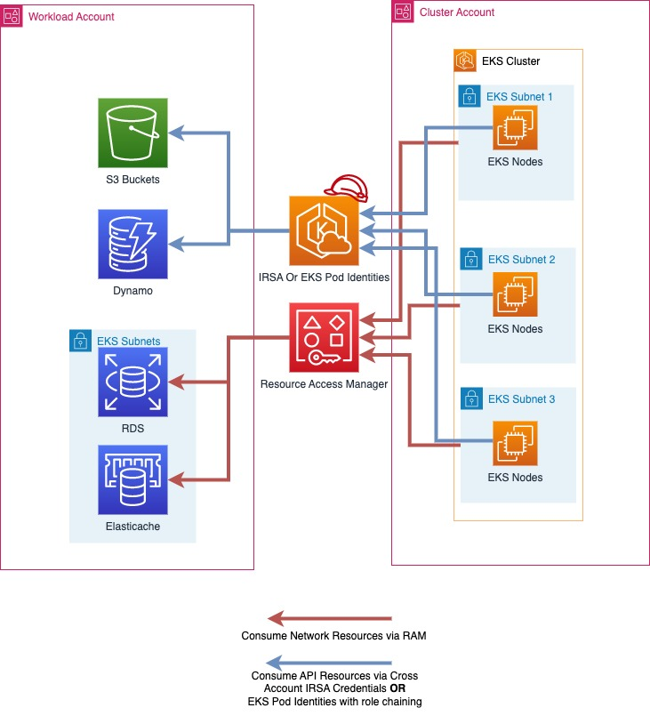

멀티 어카운트 전략¶
AWS는 비즈니스 애플리케이션 및 데이터를 분리하고 관리하는 데 도움이 되는 다중 계정 전략 및 AWS 조직을 사용할 것을 권장합니다. 다중 계정 전략을 사용하면 많은 이점이 있습니다.
- AWS API 서비스 할당량이 증가했습니다. 할당량은 AWS 계정에 적용되며, 워크로드에 여러 계정을 사용하면 워크로드에 사용할 수 있는 전체 할당량이 늘어납니다.
- 더 간단한 인증 및 접근 권한 관리 (IAM) 정책. 워크로드와 이를 지원하는 운영자에게 자체 AWS 계정에만 액세스 권한을 부여하면 최소 권한 원칙을 달성하기 위해 세분화된 IAM 정책을 수립하는 데 걸리는 시간을 줄일 수 있습니다.
- AWS 리소스의 격리 개선. 설계상 계정 내에서 프로비저닝된 모든 리소스는 다른 계정에 프로비저닝된 리소스와 논리적으로 격리됩니다. 이 격리 경계를 통해 애플리케이션 관련 문제, 잘못된 구성 또는 악의적인 동작의 위험을 제한할 수 있습니다. 한 계정 내에서 문제가 발생하면 다른 계정에 포함된 워크로드에 미치는 영향을 줄이거나 제거할 수 있습니다.
- AWS 다중 계정 전략 백서에서 추가적인 혜택에 대해 설명되어 있습니다.
다음 섹션에서는 중앙 집중식 또는 분산형 EKS 클러스터 접근 방식을 사용하여 EKS 워크로드에 대한 다중 계정 전략을 구현하는 방법을 설명합니다.
멀티 테넌트 클러스터를 위한 멀티 워크로드 계정 전략 계획¶
다중 계정 AWS 전략에서는 특정 워크로드에 속하는 리소스(예: S3 버킷, ElastiCache 클러스터 및 DynamoDB 테이블)는 모두 해당 워크로드에 대한 모든 리소스가 포함된 AWS 계정에서 생성됩니다. 이를 워크로드 계정이라고 하며, EKS 클러스터는 클러스터 계정이라고 하는 계정에 배포됩니다. 클러스터 계정은 다음 섹션에서 살펴보겠습니다. 전용 워크로드 계정에 리소스를 배포하는 것은 쿠버네티스 리소스를 전용 네임스페이스에 배포하는 것과 비슷합니다.
그런 다음 필요에 따라 소프트웨어 개발 라이프사이클 또는 기타 요구 사항에 따라 워크로드 계정을 더 세분화할 수 있습니다. 예를 들어 특정 워크로드에는 프로덕션 계정, 개발 계정 또는 특정 지역에서 해당 워크로드의 인스턴스를 호스팅하는 계정이 있을 수 있습니다. 추가 정보는 AWS 백서에서 확인할 수 있습니다.
EKS 다중 계정 전략을 구현할 때 다음과 같은 접근 방식을 채택할 수 있습니다:
중앙 집중식 EKS 클러스터¶
이 접근 방식에서는 EKS 클러스터를 클러스터 계정이라는 단일 AWS 계정에 배포합니다. IAM roles for Service Accounts (IRSA) 또는 EKS Pod Identitiesentities를 사용하여 임시 AWS 자격 증명을 제공하고 AWS Resource Access Manager (RAM) 를 사용하여 네트워크 액세스를 단순화하면 멀티 테넌트 EKS 클러스터에 다중 계정 전략을 채택할 수 있습니다. 클러스터 계정에는 VPC, 서브넷, EKS 클러스터, EC2/Fargate 컴퓨팅 리소스 (작업자 노드) 및 EKS 클러스터를 실행하는 데 필요한 추가 네트워킹 구성이 포함됩니다.
멀티 테넌트 클러스터를 위한 멀티 워크로드 계정 전략에서 AWS 계정은 일반적으로 리소스 그룹을 격리하기 위한 메커니즘으로 쿠버네티스 네임스페이스와 일치합니다. 멀티 테넌트 EKS 클러스터에 대한 멀티 계정 전략을 구현할 때는 EKS 클러스터 내의 테넌트 격리의 모범 사례를 여전히 따라야 합니다.
AWS 조직에 클러스터 계정을 여러 개 보유할 수 있으며, 소프트웨어 개발 수명 주기 요구 사항에 맞는 클러스터 계정을 여러 개 보유하는 것이 가장 좋습니다. 대규모 워크로드를 운영하는 경우 모든 워크로드에 사용할 수 있는 충분한 쿠버네티스 및 AWS 서비스 할당량을 확보하려면 여러 개의 클러스터 계정이 필요할 수 있습니다.
|  |
|---|
| 위 다이어그램에서 AWS RAM은 클러스터 계정의 서브넷을 워크로드 계정으로 공유하는 데 사용됩니다. 그런 다음 EKS 파드에서 실행되는 워크로드는 IRSA 또는 EKS Pod Identitiesentities와 역할 체인을 사용하여 워크로드 계정에서 역할을 맡아 AWS 리소스에 액세스합니다. |
멀티 테넌트 클러스터를 위한 멀티 워크로드 계정 전략 구현¶
AWS 리소스 액세스 관리자와 서브넷 공유¶
AWS Resource Access Manager (RAM)을 사용하면 AWS 계정 전체에서 리소스를 공유할 수 있습니다.
AWS 조직에 RAM이 활성화되어 있는 경우, 클러스터 계정의 VPC 서브넷을 워크로드 계정과 공유할 수 있습니다. 이렇게 하면 Amazon ElastiCache 클러스터 또는 Amazon Relational Database Service (RDS) 데이터베이스 등 워크로드 계정이 소유한 AWS 리소스를 EKS 클러스터와 동일한 VPC에 배포하고 EKS 클러스터에서 실행되는 워크로드에서 사용할 수 있습니다.
RAM을 통해 리소스를 공유하려면 클러스터 계정의 AWS 콘솔에서 RAM을 열고 "리소스 공유" 및 "리소스 공유 생성"을 선택합니다. 리소스 공유의 이름을 지정하고 공유하려는 서브넷을 선택합니다. 다시 다음을 선택하고 서브넷을 공유하려는 워크로드 계정의 12자리 계정 ID를 입력하고 다음을 다시 선택한 후 Create resource share (리소스 공유 생성) 를 클릭하여 완료합니다. 이 단계가 끝나면 워크로드 계정은 리소스를 해당 서브넷에 배포할 수 있습니다.
프로그래밍 방식 또는 IaC로 RAM 공유를 생성할 수도 있습니다.
EKS Pod Identitiesentities와 IRSA 중 선택¶
re:Invent 2023에서 AWS는 EKS의 파드에 임시 AWS 자격 증명을 전달하는 더 간단한 방법으로 EKS Pod Identitiesentities를 출시했습니다. IRSA 및 EKS 파드 자격 증명은 모두 EKS 파드에 임시 AWS 자격 증명을 전달하는 유효한 방법이며 앞으로도 계속 지원될 것입니다. 어떤 전달 방법이 요구 사항에 가장 잘 맞는지 고려해야 합니다.
EKS 클러스터 및 여러 AWS 계정을 사용하는 경우 IRSA는 EKS 클러스터가 직접 호스팅되는 계정 이외의 AWS 계정에서 역할을 직접 맡을 수 있지만 EKS Pod Identities는 역할 체인을 구성해야 합니다. 자세한 비교는 EKS 문서를 참조하십시오.
IRSA(IAM Roles for Service Accounts)를 사용하여 AWS API 리소스에 액세스¶
IAM Roles for Service Accounts (IRSA)를 사용하면 EKS에서 실행되는 워크로드에 임시 AWS 자격 증명을 제공할 수 있습니다. IRSA를 사용하여 클러스터 계정에서 워크로드 계정의 IAM 역할에 대한 임시 자격 증명을 얻을 수 있습니다. 이를 통해 클러스터 계정의 EKS 클러스터에서 실행되는 워크로드가 워크로드 계정에 호스팅된 S3 버킷과 같은 AWS API 리소스를 원활하게 사용하고 Amazon RDS 데이터베이스 또는 Amazon EFS File Systems와 같은 리소스에 IAM 인증을 사용할 수 있습니다.
워크로드 계정에서 IAM 인증을 사용하는 AWS API 리소스 및 기타 리소스는 동일한 워크로드 계정의 IAM 역할 자격 증명으로만 액세스할 수 있습니다. 단, 교차 계정 액세스가 가능하고 명시적으로 활성화된 경우는 예외입니다.
교차 계정 액세스를 위한 IRSA 활성화¶
클러스터 계정의 워크로드에 대해 IRSA가 워크로드 계정의 리소스에 액세스할 수 있도록 하려면 먼저 워크로드 계정에 IAM OIDC ID 공급자를 생성해야 합니다. IRSA 설정 절차와 동일한 방법으로 이 작업을 수행할 수 있습니다. 단, 워크로드 계정에 ID 공급자가 생성된다는 점만 다릅니다: https://docs.aws.amazon.com/eks/latest/userguide/enable-iam-roles-for-service-accounts.html
그런 다음 EKS의 워크로드에 대해 IRSA를 구성할 때 설명서와 동일한 단계를 수행 할 수 있지만 “예제 다른 계정의 클러스터에서 ID 공급자 생성” 섹션에서 설명한 대로 워크로드 계정의 12자리 계정 ID를 사용할 수 있습니다.
이를 구성한 후에는 EKS에서 실행되는 애플리케이션이 해당 서비스 계정을 직접 사용하여 워크로드 계정에서 역할을 담당하고 해당 계정 내의 리소스를 사용할 수 있습니다.
EKS Pod Identities로 AWS API 리소스에 액세스¶
EKS Pod Identities는 EKS에서 실행되는 워크로드에 AWS 자격 증명을 제공하는 새로운 방법입니다. EKS Pod Identities는 EKS의 파드에 AWS 자격 증명을 제공하기 위해 더 이상 OIDC 구성을 관리할 필요가 없기 때문에 AWS 리소스 구성을 간소화합니다.
계정 간 액세스를 위한 EKS Pod Identities 활성화¶
IRSA와 달리 EKS Pod Identities는 EKS 클러스터와 동일한 계정의 역할에 직접 액세스 권한을 부여하는 데만 사용할 수 있습니다. 다른 AWS 계정의 역할에 액세스하려면 EKS Pod Identities를 사용하는 파드가 역할 체인을 수행해야 합니다.
다양한 AWS SDK에서 사용할 수 있는 프로세스 자격 증명 공급자를 사용하여 aws 구성 파일이 포함된 애플리케이션 프로필에서 역할 체인을 구성할 수 있습니다. 다음과 같이 프로필을 구성할 때 credentials _process를 자격 증명 소스로 사용할 수 있습니다.
# Content of the AWS Config file
[profile account_b_role]
source_profile = account_a_role
role_arn = arn:aws:iam::444455556666:role/account-b-role
[profile account_a_role]
credential_process = /eks-credential-processrole.sh
credential_process에 의해 호출된 스크립트의 소스:
#!/bin/bash
# Content of the eks-credential-processrole.sh
# This will retreive the credential from the pod identities agent,
# and return it to the AWS SDK when referenced in a profile
curl -H "Authorization: $(cat $AWS_CONTAINER_AUTHORIZATION_TOKEN_FILE)" $AWS_CONTAINER_CREDENTIALS_FULL_URI | jq -c '{AccessKeyId: .AccessKeyId, SecretAccessKey: .SecretAccessKey, SessionToken: .Token, Expiration: .Expiration, Version: 1}'
계정 A와 B 역할을 모두 포함하는 aws 구성 파일을 생성하고 파드 사양에 AWS_CONFIG_FILE 및 AWS_PROFILE 환경 변수를 지정할 수 있습니다.환경 변수가 파드 사양에 이미 존재하는 경우 EKS 파드 아이덴티티 웹훅은 오버라이드되지 않는다.
# Snippet of the PodSpec
containers:
- name: container-name
image: container-image:version
env:
- name: AWS_CONFIG_FILE
value: path-to-customer-provided-aws-config-file
- name: AWS_PROFILE
value: account_b_role
EKS Pod Identities와의 역할 체인을 위한 역할 신뢰 정책을 구성할 때 EKS 특정 속성을 세션 태그로 참조하고 속성 기반 액세스 제어(ABAC)를 사용하여 IAM 역할에 대한 액세스를 파드가 속한 쿠버네티스 서비스 계정과 같은 특정 EKS Pod ID 세션으로만 제한할 수 있습니다.
이러한 특성 중 일부는 보편적으로 고유하지 않을 수 있다는 점에 유의하십시오. 예를 들어 두 EKS 클러스터는 동일한 네임스페이스를 가질 수 있고 한 클러스터는 네임스페이스 전체에서 동일한 이름의 서비스 계정을 가질 수 있습니다. 따라서 EKS Pod Identities 및 ABAC를 통해 액세스 권한을 부여할 때는 서비스 계정에 대한 액세스 권한을 부여할 때 항상 클러스터 ARN과 네임스페이스를 고려하는 것이 좋습니다.
교차 계정 액세스를 위한 ABAC 및 EKS Pod Identities¶
다중 계정 전략의 일환으로 EKS Pod ID를 사용하여 다른 계정에서 역할 (역할 체인) 을 맡는 경우, 다른 계정에 액세스해야 하는 각 서비스 계정에 고유한 IAM 역할을 할당하거나, 여러 서비스 계정에서 공통 IAM 역할을 사용하고 ABAC를 사용하여 액세스할 수 있는 계정을 제어할 수 있습니다.
ABAC를 사용하여 역할 체인을 통해 다른 계정에 역할을 수임할 수 있는 서비스 계정을 제어하려면 예상 값이 있을 때만 역할 세션에서 역할을 수임하도록 허용하는 역할 신뢰 정책 설명을 생성해야 합니다. 다음 역할 신뢰 정책은 kubernetes-service-account, eks-cluster-arn 및 kubernetes-namespace 태그가 모두 기대되는 값을 갖는 경우에만 EKS 클러스터 계정 (계정 ID 111122223333) 의 역할이 역할을 수임할 수 있습니다.
{
"Version": "2012-10-17",
"Statement": [
{
"Effect": "Allow",
"Principal": {
"AWS": "arn:aws:iam::111122223333:root"
},
"Action": "sts:AssumeRole",
"Condition": {
"StringEquals": {
"aws:PrincipalTag/kubernetes-service-account": "PayrollApplication",
"aws:PrincipalTag/eks-cluster-arn": "arn:aws:eks:us-east-1:111122223333:cluster/ProductionCluster",
"aws:PrincipalTag/kubernetes-namespace": "PayrollNamespace"
}
}
}
]
}
이 전략을 사용할 때는 공통 IAM 역할에 STS:assumeRole 권한만 있고 다른 AWS 액세스는 허용하지 않는 것이 가장 좋습니다.
ABAC를 사용할 때는 IAM 역할과 사용자를 꼭 필요한 사람에게만 태그할 수 있는 권한을 가진 사람을 제어하는 것이 중요합니다. IAM 역할 또는 사용자에 태그를 지정할 수 있는 사람은 EKS Pod Identities에서 설정하는 것과 동일한 태그를 역할/사용자에 설정할 수 있으며 권한을 에스컬레이션할 수 있습니다. IAM 정책 또는 서비스 제어 정책(SCP)을 사용하여 IAM 역할 및 사용자에게 kubernetes- 및 eks- 태그를 설정할 수 있는 액세스 권한을 가진 사용자를 제한할 수 있습니다.
분산형 EKS 클러스터¶
이 접근 방식에서는 EKS 클러스터가 각 워크로드 AWS 계정에 배포되고 Amazon S3 버킷, VPC, Amazon DynamoDB 테이블 등과 같은 다른 AWS 리소스와 함께 사용됩니다. 각 워크로드 계정은 독립적이고 자급자족하며 각 사업부/애플리케이션 팀에서 운영합니다. 이 모델을 사용하면 다양한 클러스터 기능 (AI/ML 클러스터, 배치 처리, 범용 등) 에 대한 재사용 가능한 블루프린트를 생성하고 애플리케이션 팀 요구 사항에 따라 클러스터를 판매할 수 있습니다. 애플리케이션 팀과 플랫폼 팀 모두 각각의 GitOps 리포지토리에서 작업하여 워크로드 클러스터로의 배포를 관리합니다.
 |
|---|
| 위 다이어그램에서 Amazon EKS 클러스터 및 기타 AWS 리소스는 각 워크로드 계정에 배포됩니다. 그런 다음 EKS 파드에서 실행되는 워크로드는 IRSA 또는 EKS Pod Identities를 사용하여 AWS 리소스에 액세스합니다. |
GitOps는 전체 시스템이 Git 리포지토리에 선언적으로 설명되도록 애플리케이션 및 인프라 배포를 관리하는 방법입니다. 버전 제어, 변경 불가능한 아티팩트 및 자동화의 모범 사례를 사용하여 여러 Kubernetes 클러스터의 상태를 관리할 수 있는 운영 모델입니다. 이 다중 클러스터 모델에서는 각 워크로드 클러스터가 여러 Git 저장소로 부트스트랩되어 각 팀(애플리케이션, 플랫폼, 보안 등)이 클러스터에 각각의 변경 사항을 배포할 수 있습니다.
각 계정에서 IAM roles for Service Accounts (IRSA) 또는 EKS Pod Identities를 활용하여 EKS 워크로드가 다른 AWS 리소스에 안전하게 액세스할 수 있는 임시 AWS 자격 증명을 얻을 수 있도록 할 수 있습니다. IAM 역할은 각 워크로드 AWS 계정에서 생성되며 이를 k8s 서비스 계정에 매핑하여 임시 IAM 액세스를 제공합니다. 따라서 이 접근 방식에서는 계정 간 액세스가 필요하지 않습니다. IRSA의 각 워크로드에서 설정하는 방법에 대한 IAM roles for Service Accounts 설명서와 각 계정에서 EKS Pod Identities를 설정하는 방법에 대한 EKS Pod Identities 문서를 참조하십시오.
중앙 집중된 네트워킹¶
또한 AWS RAM을 활용하여 VPC 서브넷을 워크로드 계정과 공유하고 이 계정에서 Amazon EKS 클러스터 및 기타 AWS 리소스를 시작할 수 있습니다. 이를 통해 중앙 집중식 네트워크 관리/관리, 간소화된 네트워크 연결, 탈중앙화된 EKS 클러스터가 가능합니다. 이 접근 방식에 대한 자세한 설명과 고려 사항은 AWS 블로그를 참조하십시오.
 |
|---|
| 위 다이어그램에서 AWS RAM은 중앙 네트워킹 계정의 서브넷을 워크로드 계정으로 공유하는 데 사용됩니다. 그러면 EKS 클러스터 및 기타 AWS 리소스가 각 워크로드 계정의 해당 서브넷에서 시작됩니다. EKS 파드는 IRSA 또는 EKS Pod Identities를 사용하여 AWS 리소스에 액세스합니다. |
중앙화된 EKS 클러스터와 분산화된 EKS 클러스터¶
중앙 집중식 또는 분산형 중 어느 것을 사용할지는 요구 사항에 따라 달라집니다. 이 표는 각 전략의 주요 차이점을 보여줍니다.
| # | 중앙화된 EKS 클러스터 | 분산화된 EKS 클러스터 |
|---|---|---|
| 클러스터 관리: | 단일 EKS 클러스터를 관리하는 것이 여러 클러스터를 관리하는 것보다 쉽습니다. | 여러 EKS 클러스터를 관리하는 데 따른 운영 오버헤드를 줄이려면 효율적인 클러스터 관리 자동화가 필요합니다 |
| 비용 효율성: | EKS 클러스터 및 네트워크 리소스를 재사용할 수 있어 비용 효율성이 향상됩니다. | 워크로드당 네트워킹 및 클러스터 설정이 필요하므로 추가 리소스가 필요합니다 |
| 복원력: | 클러스터가 손상되면 중앙 집중식 클러스터의 여러 워크로드가 영향을 받을 수 있습니다. | 클러스터가 손상되면 손상은 해당 클러스터에서 실행되는 워크로드로만 제한됩니다. 다른 모든 워크로드는 영향을 받지 않습니다. |
| 격리 및 보안: | 격리/소프트 멀티테넌시는 '네임스페이스'와 같은 k8의 기본 구조를 사용하여 구현됩니다. 워크로드는 CPU, 메모리 등과 같은 기본 리소스를 공유할 수 있습니다. AWS 리소스는 기본적으로 다른 AWS 계정에서 액세스할 수 없는 자체 워크로드 계정으로 격리됩니다. | 리소스를 공유하지 않는 개별 클러스터 및 노드에서 워크로드가 실행되므로 컴퓨팅 리소스의 격리가 강화됩니다. AWS 리소스는 기본적으로 다른 AWS 계정에서 액세스할 수 없는 자체 워크로드 계정으로 격리됩니다. |
| 성능 및 확장성: | 워크로드가 매우 큰 규모로 성장함에 따라 클러스터 계정에서 kubernetes 및 AWS 서비스 할당량이 발생할 수 있습니다. 클러스터 계정을 추가로 배포하여 더 확장할 수 있습니다 | 클러스터와 VPC가 많아질수록 각 워크로드의 사용 가능한 k8과 AWS 서비스 할당량이 많아집니다 |
| 네트워킹: | 클러스터당 단일 VPC가 사용되므로 해당 클러스터의 애플리케이션을 더 간단하게 연결할 수 있습니다. | 분산되지 않은 EKS 클러스터 VPC 간에 라우팅을 설정해야 합니다. |
| 쿠버네티스 액세스 관리: | 모든 워크로드 팀에 액세스를 제공하고 쿠버네티스 리소스가 적절하게 분리되도록 클러스터에서 다양한 역할과 사용자를 유지해야 합니다. | 각 클러스터가 워크로드/팀 전용으로 사용되므로 액세스 관리가 간소화됩니다. |
| AWS 액세스 관리: | AWS 리소스는 기본적으로 워크로드 계정의 IAM 역할을 통해서만 액세스할 수 있는 자체 계정에 배포됩니다. 워크로드 계정의 IAM 역할은 IRSA 또는 EKS Pod Identities와의 교차 계정으로 간주됩니다. | AWS 리소스는 기본적으로 워크로드 계정의 IAM 역할을 통해서만 액세스할 수 있는 자체 계정에 배포됩니다. 워크로드 계정의 IAM 역할은 IRSA 또는 EKS Pod Identities를 사용하여 파드에 직접 전달됩니다. |